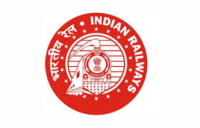
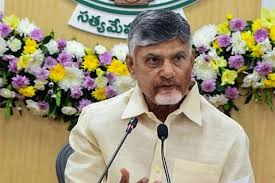

Some common synonyms of employment are business, calling, métier, occupation, pursuit, and work. While all these words mean "a specific sustained activity engaged in especially in earning one's living," employment implies work for which one has been engaged and is being paid by an employer.
OG Movie Updates from Team
Theatrical. OG is scheduled to release in Telugu, Tamil, Kannada, Malayalam and Hindi languages. The film was originally scheduled to release on 27 September 2024 but was postponed indefinitely due to production delays and Kalyan's political campaign. The film is tentatively scheduled to be released in 2025.
War
Between Pahalgam attack and Operation Sindoor: India’s social media war
Platform X became the arena not just for India and Pakistan’s social media war, but the digital harassment of civilians who dared to voice even a slightly contrary opinion
War

RRB NTPC Exam Date 2025 OUT: The RRB NTPC exam Date 2025 has been released at rrbcdg.gov.in. The CBT 1 exam will be conducted between June 5 and June 23, 2025, The RRB NTPC CBT 1 exam will consist of subjects such as Mathematics, General Awareness, General Intelligence and Reasoning and the total duration of exam is 90 minutes. Check here official notice
War

Andhra to develop port-based economy with Rs 3,500 crore project: Chandrababu Naidu
Andhra Pradesh Chief Minister N Chandrababu Naidu unveiled a Rs 3,500 crore coastal development plan to establish ports every 50 km, aiming to boost maritime trade, shipbuilding, and employment across the state.